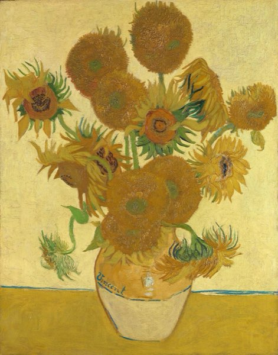

Exhibitions
A new show every few months. Here is what is on now, and what came before, all the way back to the day we opened.
-

Animals, Flowers and Light
Now on Open today
Five famous paintings: a hare, a goldfinch, sunflowers, a sunrise and a tiger in a storm. And one frame for you to fill.
-
Blue
Last winter
Thirty paintings that use only the colour blue. Some visitors said it made them feel cold, so we gave out free hot chocolate.
-
Paper Boats and Paper Birds
Last summer
Art folded from paper by people from the street. Our youngest artist was six years old.
-
Tiny Things
Two years ago
Paintings smaller than a stamp. We lent every visitor a magnifying glass, and only lost two.
-
Snails in Art
The day we opened
Our very first show, so of course it was about snails. Snails in paintings, in drawings, and one made of cake.